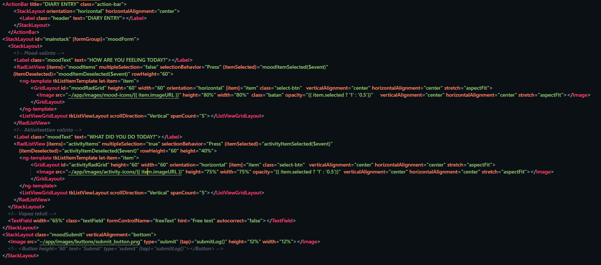
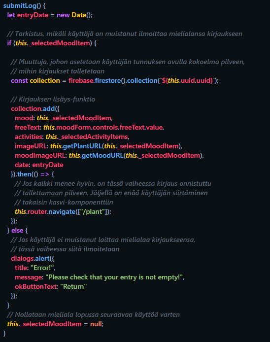
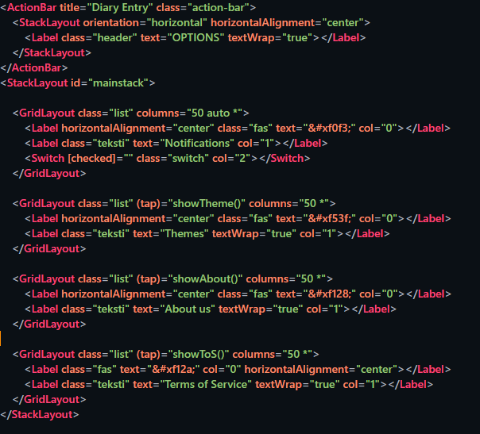
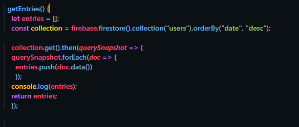
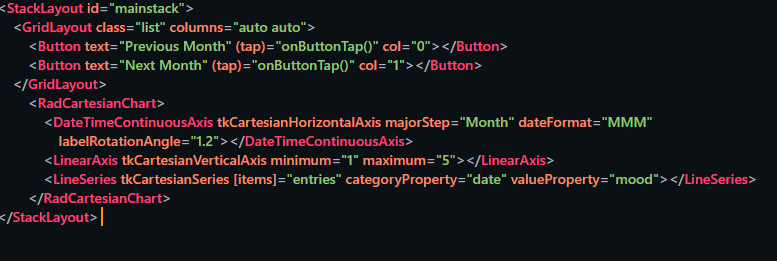
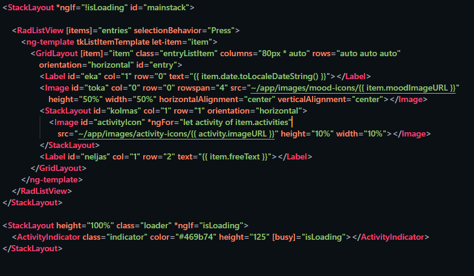

PLANTIFUL PORTFOLIO
Miika Pollari
miika.pollari97@gmail.comTämä on portfolioni Ticorporate VI:ssä tuotetusta mielialapäiväkirja-sovelluksesta Plantiful. Tässä kerron työkuvastani, käyttämistäni teknologioista/sovelluksista, yleisestä oppimisesta, sekä muita satunnaisia statistiikkoja ja mietteitä. Toimin projektissa front-end devaajana, UI/UX suunnittelijana sekä product ownerina.
OPPIMINEN
Teknologiat
- NativeScript Angular
- TypeScript
- HTML5
- CSS3
- Git
- npm
- Firebase
Teknologian osalta keskityin front-endiin. Olin mukana jokaisen komponentin tyylittelyssä, sekä jatkuvasti typescriptinkin ääressä. Käytin NativeScriptin UI componentteja ja tutkin niiden toiminnallisuuksia jatkuvasti, sekä tutustuin muutamaan NativeScriptin plugineihin. Keskustelimme myös koodista ja eri toteutusvaihtoehdoista muun tiimin teknologisen toteutuksen jäsenten kanssa koko ajan.
Versionhallinnassa käytössämme oli GitHub, ja näin Git Bash tuli myös hyvin tutuksi.

Ohjelmistot
- VSCode
- Android SK, emulaattorit
- Adobe Photoshop
- Adobe Illustrator
- Adobe XD
Opin käyttämään uusia VSCoden plugineja, sekä Android emulaattoriympäristön käyttöä. Photoshop ja Illustrator olivat vanhoja tuttuja, mutta syvensin osaamistani. Opettelin Adobe XD:n alusta asti.

Kehittämiä komponentteiä
Moodikirjausnäkymä
HTML puolella on lomake, josta valitaan painamalla iconia mieliala. Valittaessa iconin läpinäkyvyys muuttuu. Aktiviteetin valintaan sama periaate, mutta niitä voi valita monta vain yhden sijaan. Aktiviteettejä voi myös scrollata. Lopuksi käyttäjä voi kirjoittaa tekstikenttään vapaata tekstiä. Nämä tallentuvat tietokantaan oliona .ts tiedostossa.
TypeScript-tiedostossa tallennus
Asetusnäkymä
NativeScriptin GridLayoutissa on esitettynä eri asetusnäppäimet, joiden tekstit ja iconit asetellaan gridiin columneja ja rivejä hyödyntäen.
Graafikomponentti
Koodi oli kesken ja graafikomponentti jäi julkaisusta. getEntries() funktio hakee ensin tietokannasta käyttäjän ja palauttaa sen listaukset.
NativeScriptin RadCartesianChart UI komponentilla sekä sen DateTimeContinousAxiksella listaustiedot olisi saatu näkymään graafiin aikajärjestyksessä, eri muodoissa, eri aikaväleiltä, sekä tyhjätkin päivät jatkaisivat graafin käyrän etenemistä vaakatasossa, vaikkei merkintää tehtäisikään sinä päivänä.
Listausnäkymä
Näytetään jokainen listaus arraystä, ja niistä listauksen aika formatoituna, mieliala sekä aktiviteettikuvat ja vapaa teksti.
UI/UX ja muu design suunnittelu
Minulla oli hieman aikaisempaa tietotaitoa UI/UX suunnitteluun liittyen, mutta ei käytännön kokemusta projektissa. Parin ensimmäisen sprintin aikana keskityin eniten UI:n suunnitteluun ja visual guidelinesien luomiseen (fonttien valitseminen, värit yms.).
Tutkin väriteoriaa, heuristisia sääntöjä sekä opettelin käyttämään Adobe XD:tä ja loin sillä mockupin, jolla pystyi testaamaan sovelluksen navigointia kännykän kautta, mikä osoittautui helpoksi ja hyväksi tavaksi testata sovelluksen selkeyttä ja helppokäyttöisyyttä.

Ensimmäisiä mockuppeja ja visual guidelinesiä
Adobe XD:llä tehty mockup, jolla toteutimme käyttäjätestausta (vasemmalla) sekä valmis näkymä (oikealla)

Valmis kirjaus-näkymä sovelluksessa
Projektityöskentely
Opimme työskentelemään Scrum-tiimissä. Toimin product ownerina, joten seurasin backlogia, jotta taskit veisivät meitä visiota kohti.
Opin päivittäisten scrum palaverin pitämisen tärkeyden, sekä product backlogin taskien koon merkittävyyden. Pienemmät taskit oli helpompi realisoida työksi, ja näin saada monta pientä taskia nopeammin valmiiksi kuin yhden ison.
Parikoodaaminen oli meillä jatkuvassa käytössä, ja niin kuin tiimin keskusteluissamme tuli esille: "ei ole melkein mitään koodia mihin olisi koskenut vain yksi henkilö."
Myös erilaiset palaverit tulivat tutuksi, kuten viikkopalaveri, retrospektiivi sekä sprint reviewit, joissa toimin useimmiten sihteerin roolissa.
Loppusanat
Olen tyytyväinen kevääseen. Opin paljon uutta sovelluskehityksestä, siihen liittyvistä teknologioista sekä erityisesti ryhmässä toimimisesta, sillä tämä oli ensimmäinen varsinainen sovelluskehitysprojekti johon olen osallistunut.
UI/UX suunnittelu oli kehittävää, sillä opin monia uusia keinoja luoda esteettinen ja käyttäjäystävällinen käyttöliittymä mobiililaitteille. Monet NativeScriptin UI komponentit tulivat tutuiksi, sekä yleinen ohjelmointitaito, tiedonhaku sekä soveltaminen kehittyi ja olen itseluottavaisempi ryhmässä ja koodaajana. Osaan myös arvioida projektiin vaadittavaa aikaa paremmin, ja toimisin hyvin erilailla projektin aluksi nyt kuin aiemmin, varsinkin esitutkimuksen aikana.
Olen kiitollinen myös ryhmälleni, jonka kanssa oli mukavaa työskennellä. Tämä oli hyvä askel eteenpäin, sillä osaan realisoida tavoitteet uralleni paremmin ja olen varmempi työelämään päin siirtyessä.